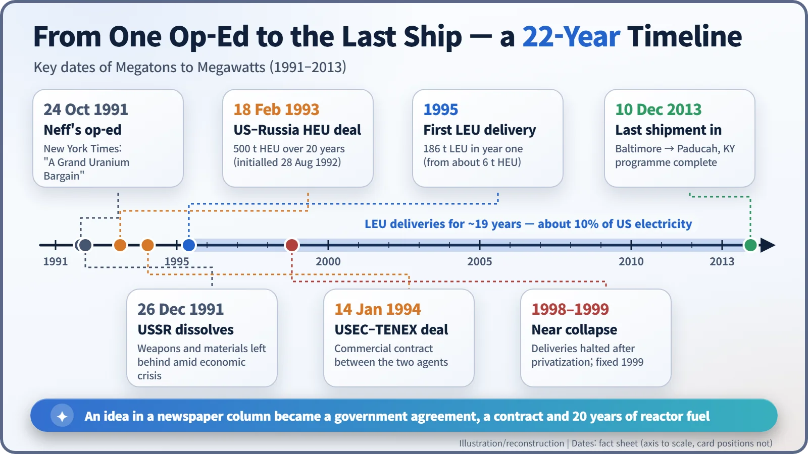
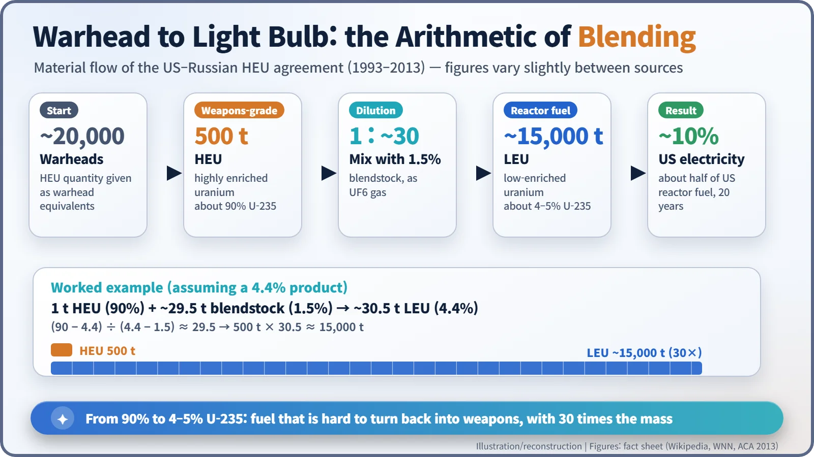
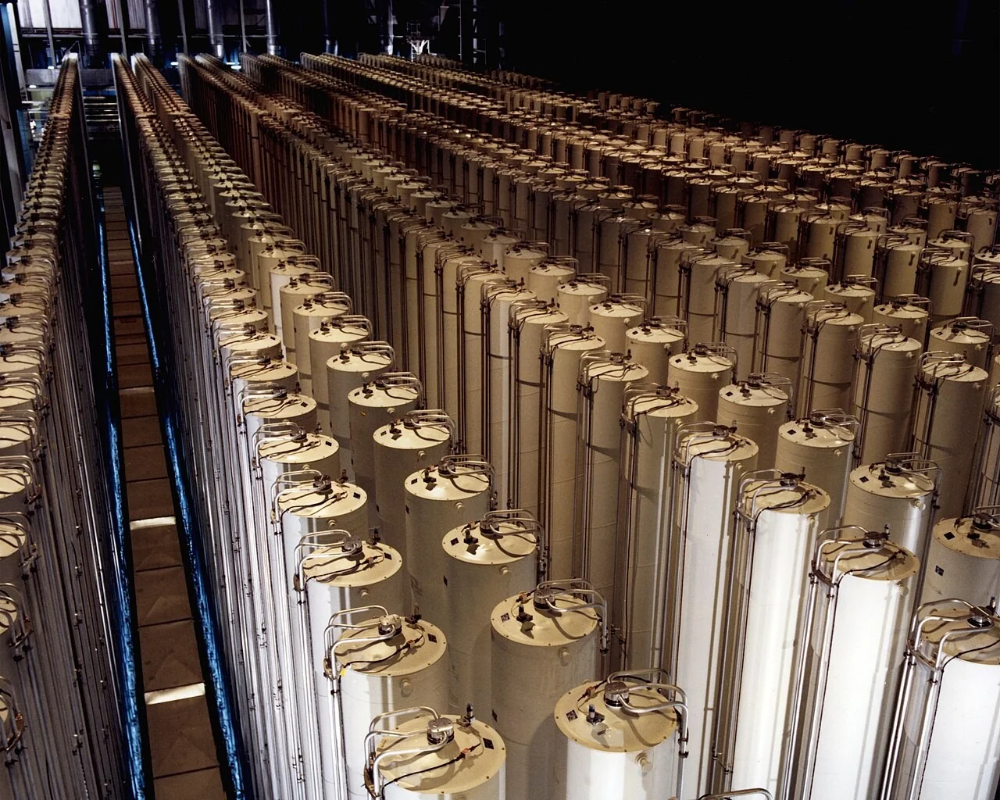

Nuclear History · 272
One Light Bulb in Ten Ran on Warheads — The End of the Cold War and "Megatons to Megawatts" (1993)
A 1991 newspaper op-ed became a twenty-year deal that diluted about 20,000 warheads' worth of uranium into fuel for American power plants.
In February 1993 the United States and Russia agreed that 500 tonnes of weapons-grade uranium from dismantled Soviet warheads, about 20,000 warheads' worth, would be diluted into low-enriched fuel and sold to the US over twenty years. The idea began with a 1991 newspaper op-ed. By the time the last shipment arrived in December 2013, the programme had supplied about half of US nuclear fuel and roughly 10% of US electricity.
"One in ten light bulbs"
"For two decades, one in ten light bulbs in America has been powered by nuclear material from Russian nuclear warheads." That line comes from a statement issued in November 2013 by the US Secretary of Energy, Ernest Moniz. It sounds like a slogan, but it rests on real numbers. A few weeks later, on 10 December 2013, the last cylinders of a twenty-year deal arrived at the port of Baltimore. Inside was uranium that had once sat in Soviet warheads, now destined for American power reactors. The deal had a catchy name: Megatons to Megawatts. [4] [3]
An empire's arsenal, and an op-ed
In 1991 the Soviet Union was sliding into economic collapse while holding tens of thousands of nuclear weapons. Even if warheads were taken apart, someone had to deal with the weapons-grade uranium inside them.
On 24 October 1991 the New York Times ran an op-ed titled "A Grand Uranium Bargain". Its author, Thomas L. Neff of MIT's Center for International Studies, was a specialist in the international uranium market. He pointed out that the Soviet arsenal contained "some 500 tons of uranium highly enriched in the isotope U-235" and proposed that the United States buy it, diluted, as power-plant fuel. "A typical warhead might yield fuel worth $200,000," he calculated. His suggested fix was for Soviet enterprises "to dilute the material down to a level that would make reuse of it for weapons difficult and transport safer." Better to pay for it and use it peacefully than to risk it leaking out of poorly guarded stores or being dumped on the market. [1]
When the op-ed appeared, the Soviet Union still existed. Two months later, on 26 December 1991, it was gone, and Neff's idea became urgent.
From handshake to first shipment
US and Russian negotiators initialled a twenty-year agreement in Moscow on 28 August 1992. On 18 February 1993 the two governments concluded the "Agreement ... Concerning the Disposition of Highly-Enriched Uranium Extracted from Nuclear Weapons". Russia would convert 500 tonnes of weapons-grade highly enriched uranium (HEU) into low-enriched uranium (LEU) for power reactors and sell it to the United States over twenty years. [2] [7]
The trade itself was run by companies. On the US side the Department of Energy oversaw the deal and the United States Enrichment Corporation (USEC) acted as commercial agent; on the Russian side it was Techsnabexport (TENEX), under the Ministry for Atomic Energy. The two signed their implementing contract on 14 January 1994, and the first material arrived in 1995. That first year brought 186 tonnes of LEU, made from about 6 tonnes of HEU. [5]
One point is worth stressing. This was not an arms-reduction treaty that capped the number of weapons. It was a deal to dispose of material from weapons already slated for dismantling. Two Russian experts later called it "essentially a mutually advantageous commercial deal". [5]

How to water down 90% uranium
Natural uranium contains only about 0.7% of uranium-235, the isotope that splits easily. Power-reactor fuel is enriched to roughly 4–5%; weapons material to about 90%. Same element, very different concentrations.
So turning bomb material into fuel is surprisingly simple in principle: you dilute it, a process called down-blending. Think of topping up a concentrated cordial with water. In Russian plants the HEU was converted into uranium hexafluoride gas and mixed with a "blendstock" of uranium enriched to about 1.5%. [5]
Here is a worked example. If you aim for a product of 4.4%, each tonne of HEU needs about 29.5 tonnes of blendstock, giving about 30.5 tonnes of fuel. Scale that up and 500 tonnes becomes roughly 15,000 tonnes, close to thirty times the mass. Turning that back into weapons material would require large enrichment plants all over again. Weapons use becomes difficult, not physically impossible, which is why the LEU stayed under peaceful-use requirements after it reached the United States. [4]


Twenty bumpy years
It was not always smooth. As USEC moved toward privatization (it was sold off in 1998), the question of who would pay for the natural-uranium component of the blended material became tangled, and deliveries stopped for more than six months. Only a separate agreement in March 1999, which transferred that natural-uranium component to Russia, got things moving again. [5]
Still, the numbers piled up. Over twenty years, 500 tonnes of HEU, about 20,000 warheads' worth, were down-blended into roughly 15,000 tonnes of LEU (sources range from just over 14,000 to about 15,000 tonnes). That fuel supplied about half of the fuel used in US nuclear plants and about 10% of US electricity. [3] [5] [7]
The final cylinders left St Petersburg in November 2013, reached Baltimore on 10 December and went on to USEC's site in Paducah, Kentucky. Moniz called the completion of this "'swords to ploughshares' program" a major victory for both countries. [6] [4]
One of the biggest disarmament stories of the Cold War's end did not happen at a signing table. It happened quietly, inside power stations, and one newspaper column's arithmetic ended up lighting homes for twenty years.